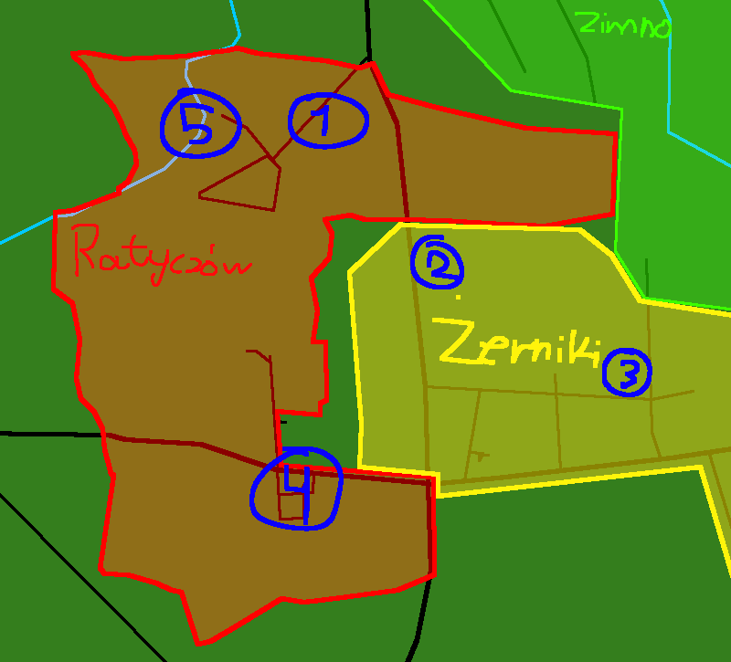

Czyli małe zadupie wioski (bo jeszcze pgr, i coś tam) w Tomaszowie Lubelskim, z kąd pochodzę JA :)
Świetnie że pytasz!
Ratyczów to miejscowość położona na Lubelszczyźnie w powiecie Tomaszowskim, gminie Łaszczów (gdzie w latach 2019-2024 burmistrzynią była Aleksandra Pietrasz, a w latach 2009-2021 sołtysem był Andrzej Pietrasz), która słynie z...
no tak w sumie z niczego
Ratyczów (dawniej nazywany także Raticzew), po raz pierwszy wieś wzmiankowana została w roku 1424. Po roku 1431 weszła w posiadanie rodu Zbrożków herbu Jasieńczyk. W okresie 30 lat swej aktywności gospodarczej Mikołaj Zbrożek wojski bełski zgromadził w swoim posiadaniu ogółem 13 wsi między innymi: Krzewica, Ratyczów, Worochta, Przemysłów, Szlatyn, Łubcze, Chorobrów, a w latach 1487–1488 części po Uhrynowskich. Ratyczów przejął w 1469 roku. W roku 1491 Mikołaj przekazał swoje dobra synowi Pawłowi w tym Ratyczów, Żerniki pozostały ośrodkiem włości rodowych. W wieku XVI majątek Zbrożka uległ rozdrobnieniu.
Źródło : wikipedia.org
Zdjęcie autorstwa Jakuba Kruczka
W Poprzedniej sekcji napisałem o dwóch osobach, burmistrzyni Łaszczowa w latach 2019-2021, Aleksandrze Pietrasz, i sołtysem od 2009-2021, Andrzeju Pietrasziu. Teraz przeczytaj kto jest autorem tej strony (gdzieś na dole jest)
nie che mi się rozpisywać, poniżej wysyłam własno ręcznie zrobioną mapkę ważnych miejsc, i potem je opisze
